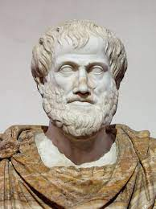

Aristóteles (em grego clássico: Ἀριστοτέλης; romaniz.:Aristotélēs; Estagira, 384 a.C. – Atenas, 322 a.C.) foi um filósofo e polímata da Grécia Antiga. Ao lado de Platão, de quem foi discípulo na Academia, foi um dos pensadores mais influentes da história da civilização ocidental.[2] Aristóteles abordou quase todos os campos do conhecimento de sua época: biologia, física, metafísica, lógica, poética, política, retórica, ética e, de forma mais marginal, a economia. A filosofia, definida como "amor à sabedoria", passou a ser compreendida por Aristóteles em sentido mais amplo, buscando se tornar uma ciência das ciências. Embora o estagira tenha escrito muitos tratados e diálogos formatados para a publicação, apenas cerca de um terço de sua produção original sobreviveu, nenhuma delas destinada à publicação.[3]
Sócrates (em grego: Σωκράτης, AFI: [sɔːkrátɛːs], transl. Sōkrátēs; Alópece, c. 470 a.C. – Atenas, 399 a.C.)[1] foi um filósofo ateniense do período clássico da Grécia Antiga. Creditado como um dos fundadores da filosofia ocidental, é até hoje uma figura enigmática, conhecida principalmente através dos relatos em obras de escritores que viveram mais tarde, especialmente dois de seus alunos, Platão e Xenofonte, bem como pelas peças teatrais de seu contemporâneo Aristófanes. Muitos defendem que os diálogos de Platão seriam o relato mais abrangente de Sócrates a ter perdurado da Antiguidade aos dias de hoje.[2]

Nicolau Maquiavel (em italiano: Niccolò di Bernardo dei Machiavelli; Florença, 3 de maio de 1469 — Florença, 21 de junho de 1527) foi um filósofo, historiador, poeta, diplomata e músico de origem florentina do Renascimento.[1] É reconhecido como fundador do pensamento e da ciência política moderna,[1] pelo fato de ter escrito sobre o Estado e o governo como realmente são, e não como deveriam ser.

Galileo di Vincenzo Bonaulti de Galilei, mais conhecido como Galileu Galilei (Pisa, 15 de fevereiro de 1564 — Florença, 8 de janeiro de 1642), foi um astrônomo, físico e engenheiro florentino, às vezes descrito como polímata.[2] Frequentemente é referenciado como "pai da astronomia observacional",[3] "pai da física moderna",[4][5] "pai do método científico"[6] e "pai da ciência moderna".[7]

Leonardo di Ser Piero da Vinci (pron.ⓘ), ou simplesmente Leonardo da Vinci (Anchiano, 15 de abril de 1452[2] — Amboise, 2 de maio de 1519), foi um polímata nascido na atual Itália,[2][nb 1] uma das figuras mais importantes do Alto Renascimento,[2] que se destacou como cientista, matemático, engenheiro, inventor, anatomista, pintor, escultor, arquiteto, botânico, poeta e músico.[3][4][5] É ainda conhecido como o precursor da aviação e da balística.[3] Leonardo frequentemente foi descrito como o arquétipo do homem do Renascimento, alguém cuja curiosidade insaciável era igualada apenas pela sua capacidade de invenção.[6] É considerado um dos maiores pintores de todos os tempos e, possivelmente, a pessoa dotada de talentos mais diversos a ter vivido.[7] Segundo Helen Gardner, historiadora de arte, a profundidade e o alcance de seus interesses não tiveram precedentes e "sua mente e personalidade parecem sobre-humanos para nós, e o homem em si [nos parece] misterioso e distante".[6]
Martinho Lutero (em alemão: Martin Luther; Eisleben, 10 de novembro de 1483 – Eisleben, 18 de fevereiro de 1546) foi um monge agostiniano e professor de teologia germânico que tornou-se uma das figuras centrais da Reforma Protestante.

Nelson Rolihlahla Mandela (Mvezo, 18 de julho de 1918 – Joanesburgo, 5 de dezembro de 2013) foi um advogado, líder rebelde e presidente da África do Sul de 1994 a 1999, considerado como o mais importante líder da África Subsaariana, vencedor do Prêmio Nobel da Paz de 1993,[1] e pai da moderna nação sul-africana,[2] onde é normalmente referido como Madiba (nome do seu clã) ou "Tata" ("Pai").

Martin Luther King Jr. (nascido Michael King Jr.; Atlanta, 15 de janeiro de 1929 – Memphis, 4 de abril de 1968) foi um pastor batista e ativista político estadunidense que se tornou a figura mais proeminente e líder do movimento dos direitos civis nos Estados Unidos de 1955 até seu assassinato em 1968. King é amplamente conhecido pela luta dos direitos políticos através da não-violência e desobediência civil, inspirado por suas crenças cristãs e o ativismo não-violento de Mahatma Gandhi.

Sir Isaac Newton PRS (Woolsthorpe-by-Colsterworth, 25 de dezembro de 1642jul./ 4 de janeiro de 1643greg. – Kensington, 20 de março de 1727jul./ 31 de março de 1727greg) foi um matemático, físico, astrônomo, teólogo e autor inglês (descrito em seus dias como um "filósofo natural") amplamente reconhecido como um dos cientistas mais influentes de todos os tempos e como uma figura-chave na Revolução Científica. Seu livro Philosophiæ Naturalis Principia Mathematica (Princípios Matemáticos da Filosofia Natural), publicado pela primeira vez em 1687, lançou as bases da mecânica clássica. Newton também fez contribuições seminais à óptica e compartilha crédito com Gottfried Wilhelm Leibniz pelo desenvolvimento do cálculo infinitesimal.
Pedro II (Rio de Janeiro, 2 de dezembro de 1825 – Paris, 5 de dezembro de 1891), cognominado "o Magnânimo",[1][2] foi o segundo e último Monarca do Império do Brasil, tendo imperado no país durante um período de 58 anos. Foi filho mais novo do imperador Pedro I do Brasil e da imperatriz consorte Maria Leopoldina da Áustria e, portanto, membro do ramo brasileiro da Casa de Bragança. Nascido no Palácio Imperial de São Cristóvão, no Rio de Janeiro. A abrupta abdicação do pai e sua partida para Portugal, tornaram Pedro imperador com apenas cinco anos. Obrigado a passar a maior parte do seu tempo estudando em preparação para reinar, conheceu poucos momentos de alegria e amigos de sua idade. Suas experiências com intrigas palacianas e disputas políticas durante este período tiveram grande impacto na formação de seu caráter. O imperador D. Pedro II tornou-se um homem com forte senso de dever e devoção ao seu país e seu povo. Por outro lado, ressentiu-se cada vez mais de seu papel como monarca.